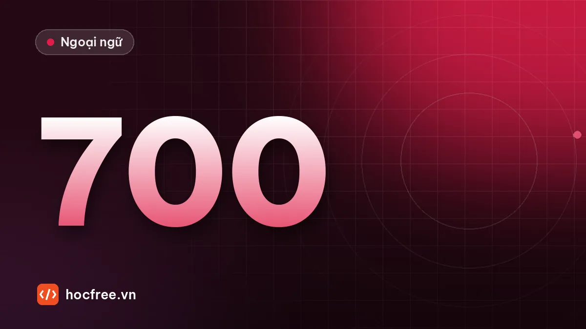
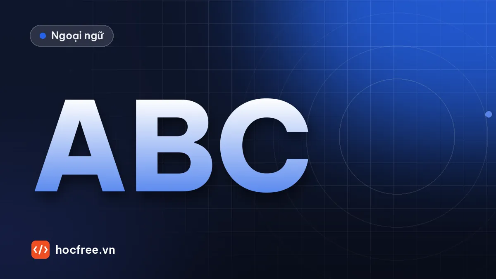
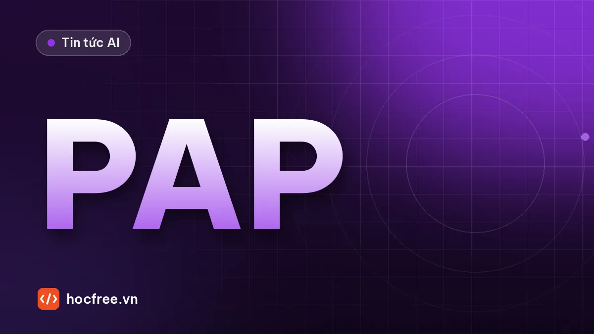

MớiLộ trình Vision Engineer 14 chặng →
Học AI & Computer Vision từ số 0 đến kỹ sư
Bài học tiếng Việt dễ hiểu, dự án có mã nguồn và lộ trình rõ ràng để trở thành Vision Engineer. Hoàn toàn miễn phí.
- 172+bài viết
- 47chủ đề
- 14chặng lộ trình
- 0đhọc phí
Công cụ bạn sẽ thành thạo
- Python
- OpenCV
- PyTorch
- YOLO
- ONNX Runtime
- C# .NET
- OPC UA
Cách học trên HọcFree
Học → Thực hành → Trở thành kỹ sư
Ba bước rõ ràng, đi từ kiến thức đến công việc thật.
⭐ Lộ trình nổi bật
Trở thành Vision Engineer
Machine Vision + AI Vision + Industrial Automation. Từ Python đến triển khai hệ thống Vision trong nhà máy.
- 14 chặng
- ~12 tháng
- 8–10 giờ/tuần
- Miễn phí
- 1Nền tảng lập trình & xử lý ảnhPython · OpenCV · Image Processing11 tuần
- 2Machine Vision công nghiệpMachine Vision · Industrial Vision · Camera / Lens / Lighting · Measurement / Matching / OCR · Calibration14 tuần
- 3Tích hợp nhà máyPLC / Robot / MES4 tuần
- 4AI VisionDeep Learning · AI Vision · Detection / Segmentation / Anomaly Detection13 tuần
- 5Triển khai & thực chiếnDeployment · Real-world Projects9 tuần
- 🎯Vision EngineerVision Engineer, Machine Vision Engineer, AI Vision Engineer
Mới cập nhật
Bài viết mới
 Học AI & Lập trình
Học AI & Lập trìnhKiểm thử hàm xử lý ảnh với pytest: bắt lỗi trước khi lên máy
Dùng fixture, parametrize, pytest.raises và pytest.approx để khóa chặt các hàm cắt ROI, đếm pixel, đánh giá OK/NG, bắt lỗi ngưỡng trước khi lên máy trạm.
 Học AI & Lập trìnhC#: lưu và nạp recipe trạm vision bằng System.Text.Json10/10/2026 · 8 phút đọc
Học AI & Lập trìnhC#: lưu và nạp recipe trạm vision bằng System.Text.Json10/10/2026 · 8 phút đọc
Ngoại ngữLộ trình 700 TOEIC trong 5 tháng cho người đi làm09/10/2026 · 5 phút đọc
Ngoại ngữCách học tiếng Anh hiệu quả: 7 nguyên tắc cho người đi làm09/10/2026 · 4 phút đọc
Tin tức AISierra và Meta đề xuất Personal Agent Protocol cho agent cá nhân08/10/2026 · 3 phút đọcKhám phá
Không chỉ có lập trình
Kiến thức nền, tin tức, ngoại ngữ và tài nguyên để học nhanh hơn.
Sẵn sàng trở thành Vision Engineer?
Bắt đầu từ chặng 1 ngay hôm nay. Miễn phí, không cần đăng ký.